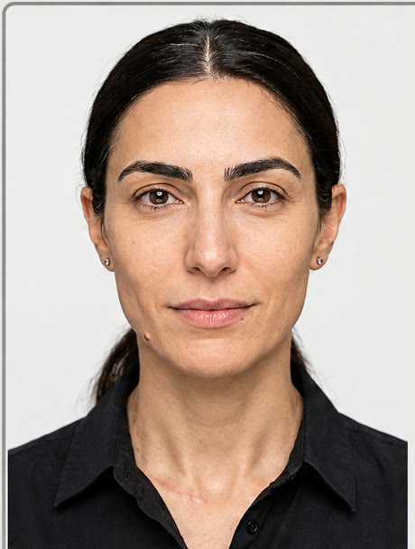
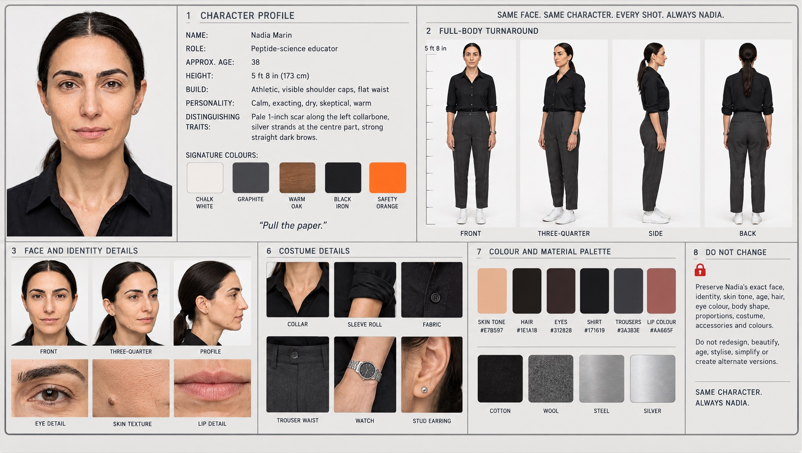
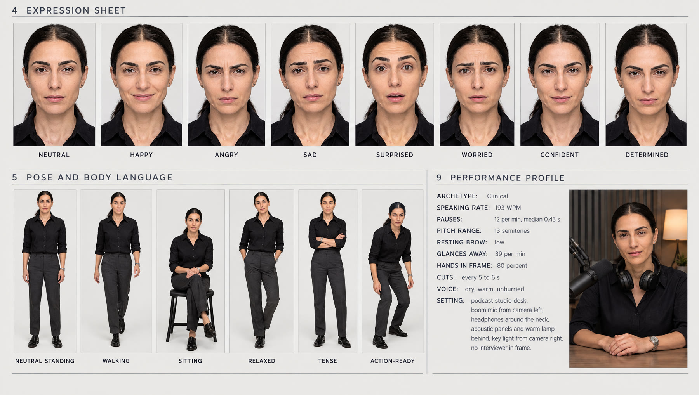
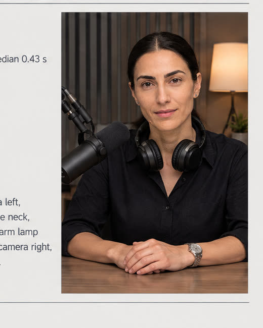

Answer the steps, or type one paragraph and let the studio fill the rest. You get a continuity card, a build pack, and a finished reel of an invented character or of yourself.
This front end sits on top of Higgsfield. The platform renders; this guide decides. The decisions come from 322 real creator reels measured frame by frame and 232 posts audited for what the algorithm rewards, so your character talks, moves and pauses like the people who already win in your niche.

Invented in this studio on Oct 13. Plate → 11-angle training set → trained identity → continuity sheet → designed voice → reel 002, gate score 82. Open the AI Character tab to see every field as it was filled.
Someone who does not exist. You design the face, the mark, the room, the voice, the position she takes. Best when the account must survive platform rules without your name on it.
8 steps · about 20 minutes · about 75 credits to the first reel.
You, posting without filming. Ten to fifteen photos and a voice memo become a trained identity and a voice. Same reel machine, your face and your words.
6 steps · about 15 minutes plus a 10-minute training wait · about 30 credits to the first reel.
Every render is scored against the human baseline on six dimensions. Below 70 overall it does not ship. The score card comes back with the reel.
Gate: overall ≥ 70, every dimension ≥ 55.
Read the description, type under it. The card on the right fills as you go. "Autofill" writes every later step from your brief; change anything you like after.
Your real photos become the identity and your voice memo becomes the voice. Photos never leave this page; the build pack lists what to send to the studio.
Every character and every version of a character, with its full state: every field, every phase output, the sheet, the reel and its score. Open one and the build sections, the card and the reel fill back in exactly as saved. Your own characters are saved in this browser; export a card's JSON to move it to another.
Higgsfield is the render engine: image models, a trainable face identity, video models with native speech, voice tools. This guide is the layer that tells it what to make and checks the result. Nine steps, in order. The left column is what you do here, the middle is what the platform does, the right is the number that comes back.
| # | You do (here) | Higgsfield does | Model | Credits | Time | Gate |
|---|---|---|---|---|---|---|
| 1 | Fill the design sheet. The guide writes the plate prompt: biological realism on, photographic capture off. | Renders 4 candidates of the face on a flat grey field. | Soul 2.0 ×2, GPT Image 2.5, Nano Banana 2.1 | 5 | 1 min | You pick one. Neutral mouth, mark visible, texture sharp. |
| 2 | Nothing. | Saves the plate as a Reference Element every image model can be pointed at. | Elements | 0 | instant | |
| 3 | Nothing. The 12-angle matrix is fixed. | Generates the training set with the plate as reference: both profiles, hard sun, golden hour, hair down, a selfie, full body. | Nano Banana 2.1 batch | 24 | 2 min | Contact sheet. Same person in every tile or re-roll the tile. |
| 4 | Nothing. | Trains a Soul on the face-visible photos (profiles and full body excluded; that mistake failed a training once). | Soul 2.0 training | ≈ 26 | 10 min | Status = ready, then one test still. |
| 5 | Nothing. The card you built here is the spec. | Renders the 9-module continuity sheet: profile, turnaround, face macros, 8 expressions, 6 poses, costume macros, palette, lock box, performance profile. | GPT Image 2.5 ×2 | 5.5 | 2 min | Labels and hex codes read back exactly. |
| 6 | Choose the register. Or upload your own memo (twin). | Designs 3 voice previews, or clones yours. Lines are generated and measured: words per minute, pause length, long pauses. | ElevenLabs voice design / clone | 0 to ≈ 1 | 3 min | 193 to 203 WPM, median pause ≈ 0.38 s, zero pauses over 0.7 s. |
| 7 | Nothing. Your room and wardrobe lock are the prompt. | Renders the paused-phone-video still from the Soul. | Soul 2.0 + soul id | 0.12 | 30 s | Mouth closed, hands visible, no ring light. |
| 8 | Approve the script (the guide writes it from your pillars, 28 words or fewer per clip, with a performance sheet per line). | Animates the still to the measured voice with the micro-movements from the data: relaxed brows, glances, one open-palm gesture. | Wan 2.7 (measured voice) or Seedance 2.5 native speech | 27.5 per clip · 45 draft · 180 1080p | 5 min | Humanness score. |
| 9 | Watch it once. | Scores six dimensions against the human baseline, burns captions, keeps a clean master. | reel-forensics gate, reel-build | 0 | 1 min | ≥ 70 overall and ≥ 55 each, else up to 3 fix rounds. |

Profile, turnaround, face and identity macros, costume, palette, lock box.

Eight expressions, six poses, and the performance profile the voice and video models are held to.

Speaking rate, pauses, brow level, glances, hands in frame, cut cadence: the numbers the gate scores.
Steps 1 to 3 are replaced by your photos: your best photo is the plate and the Element, the training set is your 10 to 15 real shots, and the continuity sheet is a hybrid with your real face pasted into the face panel. Step 6 is your own recording (0 credits) or a clone of it. Everything from step 7 on is identical.
Two corpora. Reel forensics: 322 reels from 14 real creators in the niche, about 150 features per reel across face, motion, edit, voice and script, run frame by frame with a human baseline split into clinical experts and practitioners. Rule audit: 232 posts from 8 accounts with view counts, read for hooks, calls to action, captions and compliance. The targets below are what the studio now prompts, measures and gates against.
words per minute is human in this niche (p10 to p90: 157 to 243). The failed avatar spoke at 113. Pace was the loudest tell.
reel forensics · 322 reelslong pauses per minute for humans (≥ 0.7 s). The avatar had 14. Median human pause 0.38 s versus 0.77 s.
reel forensicsglances away per minute (range 16 to 51). The avatar did 12, which reads as a stare. Brows should sit near 0.14, not pinned at 0.59.
reel forensics · face featuresdBFS room noise floor for real phone videos; speech around −23. The avatar's room was −91: too clean, and the ear notices.
reel forensics · audio"evidence words" per 100 words in human scripts. The avatar scripts carried 8.7 to 9.1. Experts cite less, not more.
reel forensics · scriptgate scores of the three generations (≥ 70 overall, every dimension ≥ 55). The first two failed on prosody: 52, then 42. The third, with a measured voice, scored 87 on prosody.
reel forensics · gate| Pattern | Median views | Versus | Rule the studio applies |
|---|---|---|---|
| "Follow" as the call to action (14 of top 30) | 138,000 | link in bio 45,300 | CTA is "follow" or nothing on 4 of 5 posts. |
| Comment-keyword CTAs | 15,800 | follow 52,700 | Never the "comment X" funnel. |
| Compound named in the caption | 25,300 | 14,200 without | Name it in the caption, not a purchase path. |
| No caption disclaimer (64% of posts) | 24,600 | 15,600 with | One line only on stack-adjacent posts. |
| Dosing numbers in the post | 6,245 | 21,200 overall | Never a dose. Zero of the top 30 had one. |
| First-person experiment | 25,200 | third person 20,900 | "Here's what I tracked" beats "studies show". |
| Top hook types (top 25) | movie clip 40% · self-experiment 20% · authority Q&A 20% · study specificity 12% | Hook mid-thought with a number, no greeting, no pitch. | |
| Closing lines in the top 10 with a disclaimer | 0 | End on the correction or the punchline. Stop. | |
The one rule every platform enforces: a compound plus a way to buy it. A 226K-follower account was removed over a discount code. The character is an education property; the store lives one hop away.
Finish a track and press "Build my reel". Your build pack appears here: the design sheet, every prompt in order, the script, the credit quote and the gate targets. The studio runs it and returns the reel with its score card.